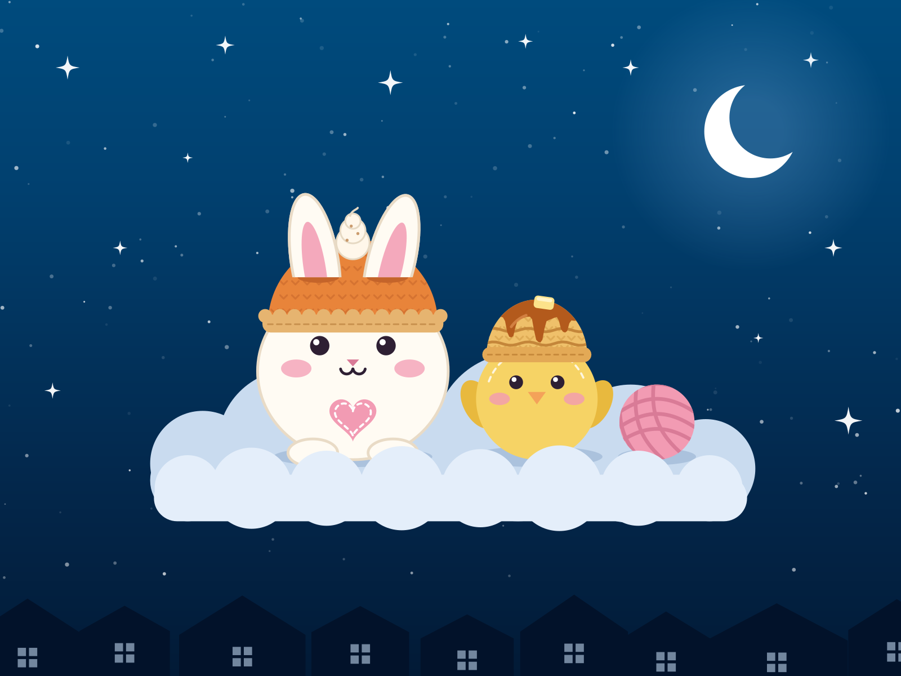

Our story
About CC's House
Cozy crochet, made by hand.

Hey everyone!
Everything at CC's House is handmade, one stitch at a time. Right now that means cozy crochet hats, like the Pancake, Egg, and Mushroom hats, with plushies, a Pumpkin Pie Hat and crochet patterns on the way. Everything is made in small batches, so no two pieces are exactly alike.
CC's House began after it became clear how much people enjoyed these handmade pieces. People in the local area started asking for pieces of their own, the feedback was great, and it grew from there.
Every piece from CC's House is made with care, and hopefully you'll find something here that makes you smile.
What to expect
Made with care
- Handmade, start to finishEvery hat is crocheted by hand.
- Small batchesEach piece is a little different, so yours is one of a kind.
- Made to fitHats are made to the head measurement you send.